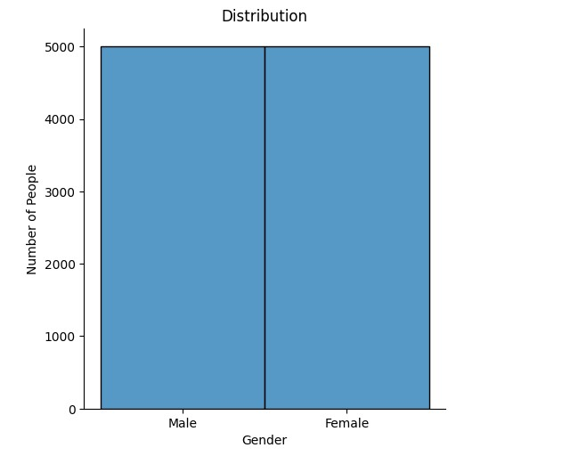

For this project on clustering, I took weight, height and gender data, and did a K-mean clustering algorithm to divide it into 2 clusters to see how closely these clusters divided through height and weight would relate to gender.
First I started by importing the needed libraries and importing the data.
import matplotlib
import numpy as np
import matplotlib.pyplot as plt
import pandas
import random as rd
import seaborn as sns
import sys
import os
path = '/content/drive/My Drive/Colab Notebooks/'
W_H_G_data = os.path.join(path, 'weight-height.csv')
from google.colab import drive
drive.mount('/content/drive')After importing the data set and libraries, I plotted the data to see the distribution based on gender.
data = pandas.read_csv(W_H_G_data)
sns.displot(data=data['Gender']).set(title="Distribution", xlabel="Gender",
ylabel="Number of People")
As displayed by the graph, the data is even between men and women, with 5000 data points each.
Since we know the split of the data, I decided to plot men and women separately on the same plot to see the difference between the two. With Male being graphed in red and Female being graphed in blue.
data_male = data[data['Gender'] == 'Male']
data_female = data[data['Gender'] == 'Female']
plt.scatter(data_male['Height'], data_male['Weight'], color='red')
plt.scatter(data_female['Height'], data_female['Weight'], color='blue')
plt.xlabel('Height')
plt.ylabel('Weight')
plt.title('Weight and Height by Gender')I then made a k-means algorithm using 2 as the number of clusters, one cluster for men and one for women. After separating the genders from the data, I used the algorithm to separate the data around 2 centroids, changing the centroid with each iteration, iterating until the centroid doesn’t change. Then I graphed the results with the final centroids in black.
data_set = data[['Height','Weight']]
K =2
# Select random observation as centroids
cent = (data_set.sample(n=K))
diff = 1
j=0
while(diff!=0):
inter_data=data_set
i=1
for index1,row_c in cent.iterrows():
diff_list=[]
for index2,row_d in inter_data.iterrows():
d=np.sqrt((row_c['Weight']-row_d['Weight'])**2 + (row_c['Height']-row_d['Height'])**2)
diff_list.append(d)
data_set[i] = diff_list
i += 1
C=[]
for index,row in data_set.iterrows():
min_dist=row[1]
pos=1
for l in range(K):
if row[l+1] < min_dist:
min_dist = row[l+1]
pos=l+1
C.append(pos)
data_set['Cluster']=C
new_cent = data_set.groupby(['Cluster']).mean()[['Weight','Height']]
if j == 0:
diff=1
j += 1
else:
diff = (new_cent['Weight'] - cent['Weight']).sum() + (new_cent['Height'] - cent['Height']).sum()
cent = data_set.groupby(['Cluster']).mean()[['Weight','Height']]
color=['blue','red']
for k in range(K):
data=data_set[data_set['Cluster']==k+1]
plt.scatter(data['Height'],data['Weight'],c=color[k])
plt.scatter(cent['Height'],cent['Weight'],c='black')
plt.xlabel('Height')
plt.ylabel('Weight')
plt.show()As can seen in this scatter plot, the k-mean prediction of men and women, is relatively consistent with the initial graph showing the distribution of data.
Github View Source button takes you to the source code for the .qmd file.